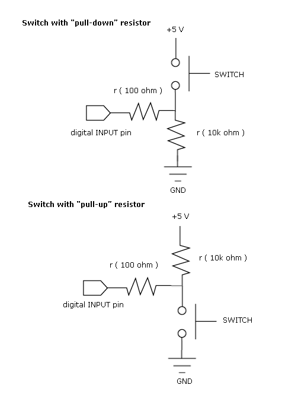
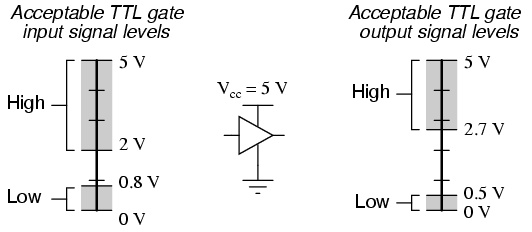
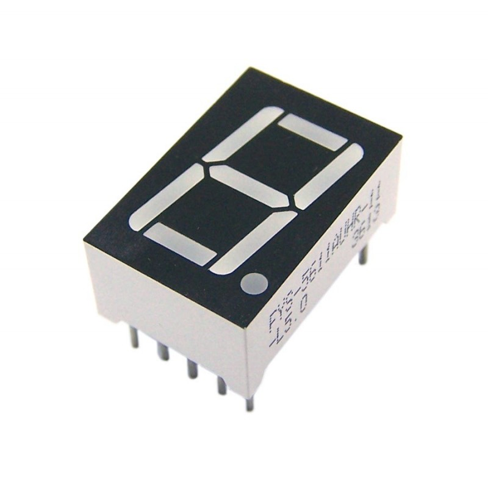
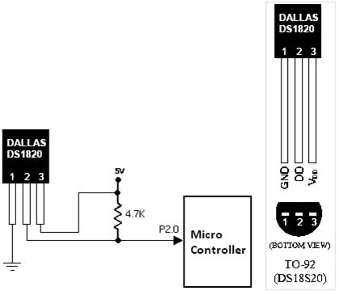
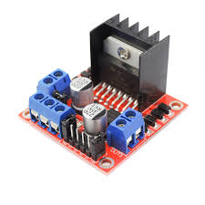
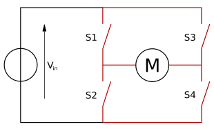

Arduino Workshop - Núcleo de Estudentes de Engenharia Eletrotécnica e Computadores - FEUP
First Part
Programming
C basics
C is one of the most commonly used programming languages. In order to be able to use an Arduino, you just need to know a few basics such as Variables, Conditions and Loops specific to the C language and the C Arduino functions that take care of Input, Output, and delay.
In C, every line ends with either a ; for statements of {} for structures (such as conditions or loops).
When you want to write text on your code (comment it) you can't just write it because it will be treated as code. Therefore use // to specify a line comment or the /* and */ delimeters to write multi line comments.
First, lets talk about the C specific code.
Variables
A variable is a named container for a certain value.
Variable names must start with a letter and cannot contain special characters (such as !"#$%...).
C variables can only hold numbers, some of which can be interpreted as letters (char).
Variables should have significant, but short names (L1 instead of LED1 for example). In this workshop, variables will have long, names so as to prevent confusion.
In this workshop, we are only interested in talking about the following variable types:
Integer (int): -32,768 to 32,767 (2 bytes) or -2,147,483,648 to 2,147,483,647 (4 bytes) (Arduino UNO uses 2 byte int's)
Boolean (bool): 0 and 1 or False and True
Float (float): (4 byte) 3.4E-38 to 3.4E+38 6 decimal place precision
Like many languages, before you use a variable to store a value, you need to initialize it. This means telling the computer to search for enough available memory for that variable type, reserve it and link that space to the variable name.
For every type, you can instead of using a normal variable, use an array. Arrays act as "containers" for variables
Variable Initialization and usage example:
Normal C Code
int Var1;
Var1 = 3;
float Var2 = 4.0503;
bool Var3 = 0;
int Var4[4];
int Var4[0] = 2;
int Var5 = {0,2,5,-2};
//Var 1 is initialized. It's value is unknown but possibly not null.
//Var 1 is attributed the value 3.
//After being initialized you should only reference the variable by name. Do not use "int" again.
//When you initialize a variable you can set a value immediately
//Certain variable types have default values (bool is 0) but it is always better to be sure.
//This is an array initialized with size 4
//This is how you can access an array element. It is important to note that a size 4 array
//Has the positions 0 to 3, not 1 to 4 nor 0 to 4. Always start counting from 0.
//You can also initialize an array directly with values
Arithmetic operations
Normal C Code
int Var1 = 2;
int Var2 = 3;
int Var3 = Var1 + Var2;
float Var4 = (float)Var1/(float)Var2;
Var2 += 2;
Var2 -= 1;
Var1++;
Var1--;
//Var3 is now an int with the value 5. The available operations are + , - , * , / and % (modulus aka division remainder)
//C only operates with the same kind of var type so be sure to do (type)var
//(this is called parsing) to set every variable to the same type before performing operations.
//This is equivalent to Var2 = Var 2 + 2;
//Same goes with -= *= /= %=
//Var1++ equals Var1 += 1; or Var1 = Var1 + 1;
//With -- as well but thats it, no ** nor //.
Logic operations and Conditionals
Normal C Code
bool BoolVar = 0;
bool BoolVar2 = True;
int Number = 1;
int Total = 0;
if(BoolVar || (Number && BoolVar2)){
Total = 1;
}else if(!BoolVar == 1){
Total = 2;
}else{
Total = 3;
}
//The if statement only runs the code between the {} if the condition
//between the () is true (not null nor 0).
//(&& => AND, || => OR) (| is not !)
//The else statement runs only if the if statement fails.
//You can use else if() to check another condition in case
//the first one fails, to no limits on the amount of else if() 's.
//In a condition, whats in between () is evaluated first
// ! represents a not. It will invert the variables' "veracity"
// !True = False, !False = True, !1 = 0
//What is value stored in the Total variable by the end of the
//program?
Loops
Normal C Code
int Var = 1;
while(Var ‹ 4){
Var++;
}
for(int i = 0; i ‹ 10; i++){
Var++;
if(Var › 5){
break;
}
}
//while loops repeat the commands between {} while the
//condition in the () is true.
//do{}while(); loops act the same but they run the code
//once before checking the condition.
//for loops are like while loops but allow the incrementation
//(or decrementation) and initialization of the variable inside
//the loop itself. The only problem being the variable (in this case i)
//cannot be used outside of the loop
//break; means cancel the rest of the loop
//continue; means skip the rest of this iteration and start over (after
//incrementing in the case of the for)
Functions
Normal C Code
Functions are pieces of code that can be repeated by calling the name of the function with the specified parameters.
A C programm usually requires a main function from which to start.
int SomeFunction(int number){
return number;
}
int Sum(int number1, int number2);
int main(){
int Var1 = SomeFunction(1);
int Var2 = 4;
int Var3 = Sum(Var1, Var2);
}
int Sum(int number1, int number2){
return number1+number2;
}
//Function header: FunctionName(Argument1, Argument2);
//A function must be initialized before it is called.
//An initialization can be just the header with the arguments
//but the rest must be somewhere in the code (Sum example)
//When a function is called, it can return a value with return
//When we type int FunctionName() we are saying that the returned
//value will be of type int
//What is the final value of Var3?
Arduino Specific Functions
Basic Arduino C Code
Most arduino code is explained further ahead.
void setup() {}
void loop() {}
delay(ms);
pinMode(PIN, OUTPUT/INPUT);
digitalWrite(PIN, HIGH/LOW);
analogWrite(PIN, VALUE);
digitalRead(PIN);
analogRead(PIN);
millis();
//Default arduino "main" function. Use it for initializations.
//Arduinos' continuous loop function.
//Delay in milliseconds.
//Set pin type for outputs or inputs.
//Set pin to 5V or 0V.
//Set pin to a value between 0 and 255. (PWM)
//Read HIGH or LOW. Everything not 0 is HIGH.
//Read values from 0 to 1023.
//Returns current time in milliseconds (overflows after ~50 days)
//Other functions https://www.arduino.cc/reference/en/
Arduino LCD Library Specific Functions/Methods
Arduino LCD Library Specific Functions/Methods
LiquidCrystal(rs, enable, d4, d5, d6, d7);
lcd.begin(cols,rows);
lcd.clear();
lcd.setCursor(col, row);
lcd.write(data);
lcd.cursor();
lcd.createChar(num, data)
//Creates a LiquidCrystal variable.
//Initializes the interface to the LCD screen, and specifies the dimensions (width and height) of the display.
//Clears the LCD screen and positions the cursor in the upper-left corner.
//Position the LCD cursor in the specified row and column.
//Write a character to the LCD.
//Display the LCD cursor: an underscore (line) at the position to which the next character will be written.
//Most LCDs allow for a number of new characters (the 1602 has 8 slots)
//byte data[8] = {B00000,B10001,B00000,B00000,B10001,B01110,B00000,}
//There are a few more methods available that won't be covered in this tutorial
//Find them here: https://www.arduino.cc/en/Reference/LiquidCrystal
Circuitry
What IS an Arduino? "Arduino is an open source computer hardware and software company, project, and user community that designs and manufactures single-board microcontrollers and microcontroller kits for building digital devices and interactive objects that can sense and control objects in the physical world."
Breadboards
A breadboard is a construction base for prototyping electronics. Originally it was literally a bread board, a polished piece of wood used for slicing bread. In the 1970s the solderless breadboard (AKA plugboard, a terminal array board) became available and nowadays the term "breadboard" is commonly used to refer to these.
Standard Breadboard connections are as is shown in the picture
Plugboard
Breadboard Connections
Jump Wire
A jump wire (also known as jumper, jumper wire, jumper cable), is normally used to interconnect the components of a breadboard or other prototype or test circuit, internally or with other equipment or components, without soldering.
Crocodile Jumper Wires
Resistor
Resistors are common passive circuit elements, that are used to manipulate current and voltage through their resistance (V=IR) and therefore are used in most, if not all, kinds of circuits. The 3rd significant figure in a resistor color code does not exist in the majority of resistors.
Resistor Chart
Resistor Composition
Potentiometer
A potentiometer is a three-terminal resistor that provides a voltage divider. They're usually used for analog-type circuit inputs, such as volume controls (radio), position detection (joystick), and such.
Potentiometer construction
Joystick
Linear Potentiometer
Light-emitting Diode (LED)
LEDs' are, as the name states, diodes. A diode is a two piece component that eases current flow in one direction (+ -> -) presenting little resistance, while blocking current flowing the opposite direction (- -> +) with great resistance. (As with every component, a diode has its limits and if the current is too much, it may not be able to block it and will either short-circuit or "burst open").
Unlike other diodes, when supplied with sufficient voltage LEDs also emit light.
LEDs have many advantages over incandescent light sources, including lower energy consumption, longer lifetime, improved physical robustness, smaller size, and faster switching.
Usually, LEDs' require a current of 20mA and voltage in-between 1.8V and 3.3V but the LED's manufacturers' datasheet should be used to get these values.
Using a Resistor with an LED
Resistors are used to control current, and therefore the voltage drop across the LED and can be compared to a water valve. Following Ohm's Law (V = I * R) we can see that for the same current, if we have a bigger voltage, all we need to do is provide a larger resistance. (Pressure/Flow analogy)
Pressure/Flow analogy
Req = R1 + R2 + ... + Rn
1/Req = 1/R1 + 1/R2 + ... + 1/Rn
Practical Circuit Example:
An LEDs' maximum current is usually about 20mA (0.020 A) and requires anywhere from 1.8V to 3.3V depending on the LED (differente color/wave lengths require different power).
Knowing that the LED consumes about 2V and requires a maximum of 20mA, we can conclude that through V = I*R, its resistance will be of aproximately 100 Ohms.
Since we want the current to be about 20mA, and knowing that the supply is 5V, we can derive that the total resistance will have to equal 250 Ohms (5/0.02).
Therefore the resistor in use will have to be of 150 Ohms (250-100).
Bare in mind that these are maximum values. LEDs will work up to 20mA and the respective voltage. Lower values will work to a certain degree and will be used just to make sure no material is damaged.
LED blink code
Arduino C Code
int Blinking_Led = 8;
void setup() {
pinMode(Blinking_Led , OUTPUT);
}
void loop() {
digitalWrite(Blinking_Led , HIGH);
delay(100);
digitalWrite(Blinking_Led , LOW);
delay(100);
}
//Prepare Arduino to use PIN 8 (Blinking_Led) as an output
//In case it isn't used, Arduino won't be able to enable 5V (approximately 2V for this circuit in case of error).
//Activate PIN 8
//Wait 100 ms
//Deactivate PIN 8
//Wait 100 ms
Button
Buttons are very usefull. They allow users to provide input to the circuit. (You could also simply cut the power flow with a button, but this way we also test input)
Button Input code
Arduino C Code
int LED = 8;
int Button = 7;
void setup(){
pinMode(LED, OUTPUT);
pinMode(Button, INPUT);
digitalWrite(LED, LOW);
}
void loop(){
if(digitalRead(Button) == HIGH){
digitalWrite(LED, HIGH);
}else{
digitalWrite(LED, LOW);
}
}
//Set PIN 7 to work as INPUT
//Start PIN 8 as LOW
//digitalRead(PIN); Reads wether the PIN is at 0V (LOW) or not.
//That is why we need to connect it to ground so that when
//the button is not pressed we can be sure that it is at 0V
//Try not connecting to ground and approaching the wires with
//your fingers
Pull-Ups and Pull-Downs
In the previous exercise, we added a pull-down resistor to the circuit.
This was done so that we could be sure that, when the button was not pressed, the voltage was the reference (0V).
Otherwise, we would have what is called a floating pin when the button was disconnected, which means we cannot assert the voltage level and therefore cannot make a correct measurement (this is not a big problem when talking about digital since the probability that the floating pin will reach a tension level high enough to overcome the defined threshold is very low).
Pull-Up - Asserted voltage is the source voltage.
Pull-Down - Asserted voltage is the reference voltage.
Most arduinos' provides an internal Pull-Up that can be activated by setting
pinMode(Button, INPUT_PULLUP);


Inner Pull-Up activation
Arduino C Code
int LED = 8;
int Button = 7;
void setup(){
pinMode(LED, OUTPUT);
pinMode(Button, INPUT_PULLUP);
digitalWrite(LED, LOW);
}
void loop(){
if(digitalRead(Button) == HIGH){
digitalWrite(LED, HIGH);
}else{
digitalWrite(LED, LOW);
}
}
//Set PIN 7 to work as INPUT with a pull-up
//Try putting a circuit together that works like the previous one
//Just remember that now there is a resistor connected to the pin
//and to the source voltage (+5V)
//This type of logic is called inverted logic
//Since the value goes to 0 when the button is pressed and not the
//other way around.
Communication
Serial Communication
Serial communication allows packages to be switched (usually in bytes) by sending the bits, not in parallel, since that would require multiple lines of communication, but through one wire, 1 bit at the time according to a pre-defined frequency.
To learn more, there are several resources available online (such as this one, made by Professor Hélio Mendonça, FEUP
https://paginas.fe.up.pt/~hsm/docencia/comp/uart/
)
Example of an arduino communicating with another arduino through Serial (Tx -> Rx, Transmitter to Receiver)
Arduino Serial Monitor
The Arduino IDE provides a neat screen for monitoring the provided Serial Port.
The Arduino.h library provides an easy way to start read a port at a certain frequency, read the incoming stream and outputting accordingly.
Serial Example
Arduino C Code
#include <Arduino.h>
char Input;
void setup(){
Serial.begin(9600);
}
void loop(){
if(Serial.available()){
Serial.print("Received: ");
Serial.println((char)Serial.read());
}
}
//Start listening to the stream with a certain bitrate
//Try putting a circuit together that works like the previous one
//Just remember that now there is a resistor connected to the pin
//and to the source voltage (+5V)
//This type of logic is called inverted logic
//Since the value goes to 0 when the button is pressed and not the
//other way around.
Pulse-Width Modulation (PWM)
PWM is a modulation technique used to encode a message into a pulsing signal.
In the graph, the duty cycle is the ammount of time the wave is non zero (since we are working with a square wave, 5V (ON) or 0V (OFF)) and therefore, if applied to the LED, the percentage of time it will be ON.
We can get this number by dividing the ammount of time the LED is turned on by the total pulse period, times a hundred.
After aproximately 60 hertz, the human eye can no longer tell the difference between a light switching on and off at such frequency and a continuous light source.
The higher the duty cycle, the more power the wave contains.
LED PWM code
In Arduino, the exits marked with ~ (~9, ~10, etc) allow pwm.
Arduino C Code
void setup(){
pinMode(9, OUTPUT);
}
void loop(){
digitalWrite(9, HIGH);
delay(100);
digitalWrite(9, LOW);
delay(900);
}
//This is an example of a squarewave with 10% duty cicle
//and a 1 second period
//(remember that delay() works in milliseconds)
Unlike with digitalWrite(), which only enables square waves, analogWrite() allows all sorts of waves since it can provide more values than just off and on (0V or 5V).
Arduino C Code
int PWM = 0;
void setup(){
pinMode(9, OUTPUT);
}
void loop(){
while(PWM ‹ 150){
analogWrite(9, PWM++);
delay(5);
}
PWM = 0;
delay(100);
}
//Which wave form do you think this code snippet will produce?
Using a 7 segment digit

7 Segment digits are nothing more than a bunch of LEDs strapped together. To get one to be turned on, simply set the corresponding pin to HIGH (or LOW, depending on the manufacturer, the LEDs may have a common cathode instead of the anode).
7 segment digit code
Do not be scared by the code. If you are not familiar with coding in general, just be sure you understand what is going on. If you have any doubts, ask us.
Arduino C Code
int Numbers[10][7] = {
{1,1,1,1,1,1,0},
{0,1,1,0,0,0,0},
{1,1,0,1,1,0,1},
{1,1,1,1,0,0,1},
{0,1,1,0,0,1,1},
{1,0,1,1,0,1,1},
{1,0,1,1,1,1,1},
{1,1,1,0,0,0,0},
{1,1,1,1,1,1,1},
{1,1,1,0,0,1,1}
};
int Entrances[] = {20,21,22,23,24,25,26,27,28,29};
void Print(int Number){
for(int i = 0; i ‹ 7; i++){
digitalWrite(Entrances[i], Numbers[Number][i]);
}
}
void setup(){
for(int i = 0; i ‹ 10; i++){
pinMode(Entrances[i], OUTPUT);
}
}
void loop(){
for(int i = 0; i ‹ 10; i++){
Print(i);
delay(5);
}
}
//Multi dimension matrices are very useful.
//In this case, we are using one to store the connections that
//need to be active to correctly form the standard 0 to 9 digits.
//For instance, at position 0 is the "code" for the digit 0,
//which is 1111110, corresponding to the sections abcdef being on
//and the section g off, forming a 0
//This is how you can create and access one.
//Matrice indexes are as expected.
//Var[][] = {
//{[0][0] , [0][1] , [0][2] , [0][3] , [0][4] , [0][5] , [0][6]},
//{[1][0] , [1][1] , [1][2] , [1][3] , [1][4] , [1][5] , [1][6]},
//{[2][0] , [2][1] , [2][2] , [2][3] , [2][4] , [2][5] , [2][6]},
//{[3][0] , [3][1] , [3][2] , [3][3] , [3][4] , [3][5] , [3][6]},
//{[4][0] , [4][1] , [4][2] , [4][3] , [4][4] , [4][5] , [4][6]},
//{[5][0] , [5][1] , [5][2] , [5][3] , [5][4] , [5][5] , [5][6]},
//{[6][0] , [6][1] , [6][2] , [6][3] , [6][4] , [6][5] , [6][6]},
//{[7][0] , [7][1] , [7][2] , [7][3] , [7][4] , [7][5] , [7][6]},
//{[8][0] , [8][1] , [8][2] , [8][3] , [8][4] , [8][5] , [8][6]},
//{[9][0] , [9][1] , [9][2] , [9][3] , [9][4] , [9][5] , [9][6]}
//};
//Here we are simply scrolling throught the digits from 0 to 9
LCD Display
A liquid-crystal display (LCD) is a flat-panel display or other electronically modulated optical device that uses the light-modulating properties of liquid crystals.
These crystals are electrically volatile, transmit and change polarized light as it passes through them and their molecules tend to maintain their orientation, like the molecules in a solid, but also move around to different positions, like the molecules in a liquid. In short, LCD's are composed by two, parallel grids with perpendicular orientation, with LCs in between them. When not exposed to an electric field, the crystals tend to align with the grooves on the grids, creating a spiral structure that bends light by 90º, allowing it to pass through the second grid. When exposed to an electric field (in this case vertical in relation to the plaques), they line up with the field and do not bend the light, preventing it from crossing the second grid.
LCD Working Principle
1602a
In this worshop, we will use the 1602a LCD Display, which is a 16 column, 2 line LCD which supports 4-bit or 8-bit codes. We will be using 4-bits to communicate (the difference between 4-bit and 8-bit is that in 4-bit mode you have to send two commands, which wont make much difference because transmission time really isn't the bottleneck here. LCD (the display, not the electronics) is slow. As such, it usually takes a few ms to update the actual image - much much slower than your data transmission time - you can easily send 16 bytes of data in 1ms in 4-bit mode).
The LCDs have a parallel interface, meaning that the microcontroller has to manipulate several interface pins at once to control the display. The interface consists of the following pins:
A register select (RS) pin that controls where in the LCD's memory you're writing data to. You can select either the data register, which holds what goes on the screen, or an instruction register, which is where the LCD's controller looks for instructions on what to do next.
A Read/Write (R/W) pin that selects reading mode or writing mode.
An Enable pin that enables writing to the registers 8 data pins (D0 -D7). The states of these pins (high or low) are the bits that you're writing to a register when you write, or the values you're reading when you read.
There's also a display constrast pin (Vo), power supply pins (+5V and Gnd) and LED Backlight (Bklt+ and BKlt-) pins that you can use to power the LCD, control the display contrast, and turn on and off the LED backlight, respectively.
LCD Circuit Example:
For our first circuit, we are going to connect the Arduino to the LCD and print a "Hello World" (or whatever you prefer) message on screen.
We will be using a potenciometer to regulate the screen contrast, but a 10K/20K resistor would do just fine.
Pin No
Function
Name
1
Ground (0V)
Ground
2
Supply voltage; 5V (4.7V – 5.3V)
VccCC
3
Contrast adjustment; through a variable resistor
VEE
4
Selects command register when low; and data register when high
Register Select
5
Low to write to the register; High to read from the register
Read/write
6
Sends data to data pins when a high to low pulse is given
Enable
7
8-bit data pins
DB0
8
DB1
9
DB2
10
DB3
11
4-bit and 8-bit data pins
DB4
12
DB5
13
DB6
14
DB7
15
Backlight VCC (5V)
Led+
16
Backlight Ground (0V)
Led-
LCD write code
Arduino C Code
#include <LiquidCrystal.h>
LiquidCrystal lcd(7, 8, 9, 10, 11 , 12);
void setup() {
lcd.begin(16, 2);
}
void loop() {
lcd.setCursor(0,1);
lcd.write("Hello");
delay(100);
lcd.setCursor(0,1);
lcd.write("World");
delay(500);
}
//Include appropriate library
//Create LiquidCrystal varable with appropriate pin format.
//Initialize LCD interface (16 by 2).
//Set the cursor on the second row, first column.
//Write message
//Wait 100 ms
//Set the cursor on the second row, first column again.
//Write over the previous message
//Wait 100 ms
Piezo
Piezoelectricity is the electric charge that accumulates in certain solids materials (such as crystals, certain ceramics, and biological matter such as bone, DNA and various proteins) in response to applied mechanical stress.
Therefore, the piezoelectric effect can be used to convert mechanical stress into an electric response that can be used in a circuit (to measure changes in pressure, acceleration, temperature, strain, or force)
They can also be used to convert voltage into a mechanical response (like a force or a vibration)
Piezos can also be found in Lighters (in lighters, a spark is created by striking metal against a flint, or by pressing a button that compresses a piezoelectric crystal (piezo ignition)), Ultrasonic Welding, Microphones, Buzzers, beepers in watches and other electronic devices, Combustion Launchers (a type of potato cannon) as an igniter, among many others.
(Ultrasonic) Distance sensor
Ultrasonic sensors work on a principle similar to radar or sonar. They generate high frequency sounds and calculate the time interval between sending the signal and receiving the echo. Therefore, ultrasonic sensor can be used to measure distance.
The HC-SR04 ultrasonic sensor consists of a transmitter, a receiver and a control module.
To operate the HC-SR04, reproduce the following instructions:
Reset the trigger pin (LOW).
Activate (HIGH) the trigger pin for 10us.
Wait for the echo.
Measure the echo signals' width (on which the rtt time is encoded).
Using the speed of sound (340m/s), calculate the distance to the object. (to get the result in seconds, and since we are using microseconds to count the time, D=0.017*T)
Distance Sensor Circuit Example:
Leaving the LCD from the previous circuit, as it is, lets connect the Arduino to the HC-SR04.
There is no need for any component other than the Arduino, HC-SR04, breadboard and some jumpers.
The connections are as follows:
VCC -> +5V
Gnd -> Ground
Trig -> Output Pin
Echo -> Input Pin
HC-SR04 write code
Arduino C Code
#include <LiquidCrystal.h>
LiquidCrystal lcd(7, 8, 9, 10, 11 , 12);
void setup() {
pinMode(5,OUTPUT);
pinMode(6,INPUT);
lcd.begin(16, 2);
lcd.setCursor(0,0);
lcd.write("Distance ");
}
unsigned long Distance = 0;
void loop() {
digitalWrite(2, LOW);
delayMicroseconds(2);
digitalWrite(2, HIGH);
delayMicroseconds(10);
digitalWrite(2, LOW);
Distance = 0.017*pulseIn(3, HIGH);
lcd.setCursor(0,1);
lcd.write("_____");
lcd.setCursor(0,1);
lcd.print(String(Distance));
lcd.print("cm");
delay(60);
delay(440);
}
//Prepare pin 2 to be used as an output (trigger)
//Prepare pin 3 to be used as an input (echo)
//Initialize time storage variable
//Clear Trigger
//Wait a couple of microseconds for the HC-SR04 to settle
//Activate the trigger
//Wait 10us
//Clear Trigger
Read Echo width
Set cursor in the second line
Clear previous readings
Reset cursor in the second line
Print the time
Wait 60ms (recommended HC-SR04 scanning frequency)
Wait more so that we don't have too manye values that can fluctuate
1-Wire technology
The 1-Wire working principle is the use of a single data line (plus ground reference).
Every 1-Wire network is composed by a 1-wire Master, which can be a PC, microcontroller or some types of integrated circuits, and 1 or more 1-Wire slaves.
When the network is online, the Master identifies all Slaves through their unique, unalterable, factory-programmed, 64-bit ID (identification number).
1-Wire devices can be grouped by their functions into several categories:
Identification only
Identification plus control
Identification plus temperature
Identification plus time
Identification plus NV SRAM
Identification plus (one time programmable) OTP EPROM
Identification plus EEPROM
Identification plus SHA-1 secure EEPROM
Identification plus logging
Most 1-Wire devices have no pin for power supply, they take their energy from the 1-Wire bus (parasitic supply) wich they store in a capacitor.
In this workshop, we will be using the DS1820 family (DS18S20, DS18B20 or others).
Temperature Sensor (DS1820)
The DS18B20 Digital Thermometer provides 9 to 12-bit (configurable) temperature readings which indicate the temperature of the device. The DS18B20 communicates over a 1-Wire, and can derive power directly from the data line (“parasite power”) or through an external power supply. Features:
Power supply range is 3.0V to 5.5V
Measures temperatures from -55°C to +125°C. Fahrenheit equivalent is -67°F to +257°F
±0.5°C accuracy from -10°C to +85°C
Converts 12-bit temperature to digital word in 750 ms (max.)
Can be powered from data line
Alarm search command identifies and addresses devices whose temperature is outside of programmed limits (temperature alarm condition)

Temperature Sensor Circuit Example:
Now, using the adequate libraries, lets read the temperature through the sensor.
1-Wire slave (DS1820 family) code
Arduino C Code
#include <LiquidCrystal.h>
#include <OneWire.h>
#include <DallasTemperature.h>
OneWire oneWire(4);
DallasTemperature sensors(&oneWire);
LiquidCrystal lcd(7, 8, 9, 10, 11 , 12);
void setup() {
sensors.begin();
lcd.begin(16, 2);
lcd.setCursor(0,0);
lcd.write("Temp ");
}
void loop() {
sensors.requestTemperatures();
lcd.setCursor(5,0);
lcd.write(" ");
lcd.setCursor(5,0);
lcd.print(String(sensors.getTempCByIndex(0)));
delay(1000);
}
//Setup a oneWire instance to communicate with any OneWire devices
//Pass our oneWire reference to Dallas Temperature. It does all the calculations and stuff
//Initialize library
//Send the command to get temperatures
//1-Wire supports multiple slaves, therefore the library returns an array with the value of the onesfound
Stepper Motors
A stepper motor is a brushless DC electric motor that divides a full rotation into a number of equal steps. The motor's position can then be commanded to move and hold at one of these steps without any position sensor for feedback (an open-loop controller), as long as the motor is carefully sized to the application in respect to torque and speed.
There are unipolar and bipolar stepper motors. The unipolar stepper motor operates with one winding with a center tap per phase. Each section of the winding is switched on for each direction of the magnetic field, making it easier to operate.
With bipolar stepper motors there is only a single winding per phase. The driving circuit needs to be more complicated to reverse the magnetic pole, which is usually done with an H-bridge arrangement.
We will be using 2 phase (4-wire) bipolar motors.
Half Stepping
L298N Driver Board
Brushed DC Motor
Unipolar VS Bipolar
L298N

The L298N is a dual-bridge, meaning it allows current to flow both ways through two separate loads (Outputs A and B). These circuits are often used in robotics and other applications to allow DC motors to run forwards or backwards (or to control stepper motors).

L298N Driver Board
LCD write code
Arduino C Code
#include <LiquidCrystal.h>
#include <Stepper.h>
LiquidCrystal lcd(7, 8, 9, 10, 11 , 12);
Stepper stepper(200, 2, 3, 4, 5);
void setup() {
pinMode(A2,INPUT);
lcd.begin(16, 2);
lcd.setCursor(0,0);
lcd.write("Rot: ");
lcd.setCursor(0,1);
lcd.write("Cur: ");
stepper.setSpeed(30);
}
int Distance = 0;
int previous = 0;
void loop() {
Distance = (int)((float)analogRead(A2)*200/1023);
lcd.setCursor(6,0);
lcd.write(" ");
lcd.setCursor(6,0);
lcd.print(Distance);
lcd.setCursor(6,1);
lcd.write(" ");
lcd.setCursor(6,1);
stepper.step(Distance - previous);
lcd.print(Distance-previous);
previous = Distance;
delay(100);
}
//Include appropriate library
//Initialize the stepper library on pins 2 through 5:
//Start pin A2 as input
//Set motor RPM
//Read potentiometer. analogRead returns int(0 to 1023),
//200 is the ammount of steps per rotation
//Only rotate the difference in steps
Disclaimer
Although the text and code was written by me, most of the images come from external websites and I hold no claim to them